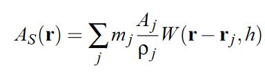
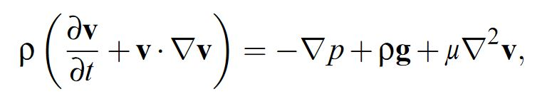

Per Wikipedia, "Smoothed-particle hydrodynamics (SPH) is a computational method used for simulating the mechanics of continuum media, such as solid mechanics and fluid flows. It was developed by Gingold and Monaghan [2] and Lucy[3] in 1977, initially for astrophysical problems."
CFD, of the sort typically encountered in the engineering domain, typically makes use of methods that discretize the fluid domain into a mesh. Once the domain has been discretized, the Navier-Stokes equations are then solved over the individual cells. These methods can result in very accurate simulations of the fluid behavior, but can require a significant amount of time to converge to a satisfactory result (for example, as a CFD analyst I regularly ran models which would take an entire weekend to converge).
In situations where real-time, interactive fluid modelling is required (video games, real-time simulation, etc.), mesh free methods like SPH are seeing frequent use. In mesh free methods, rather than discretizing the domain into a mesh, the fluid itself is discretized into a large set of nodes, whose motion is determined by the interaction between nodes.
Source code for this project can be found on my GitHub.
In SPH, scalar quantities like density are computed for each particle as a weighted sum of contributions from other particles. Weighting functions called Smoothing Kernels weight the contribution from each particle. A feature of the smoothing kernel functions is the support length, h, which is the radius surrounding each particle inside which the contributions from other particles are considered. If a particle is at a distance greater than the support length from another particle, no interaction takes place between the two.
The general form of the SPH equation used to calculate some scalar quantity at a point r is shown below:
Where mj is the mass of the jth particle, Aj is the scalar quantity of the jth particle, ρj is the density of the jth particle, and W(r - rj, h) is the smoothing kernel with support length h.
Fluid flow is described by the continuity equation, which ensures conservation of mass, and the Navier-Stokes equation which ensure the conservation of momentum. Because we are using a constant number of particles, conservation of mass is automatically satisfied and thus we can ignore the continuity equation. The Navier-Stokes equation for incompressible fluids is shown below:
The right-hand side of the equation contain three forces which influence the behavior of the fluid: pressure force (first term), external forces (second term), and viscosity (third term). Application of the general SPH equation to the density and the pressure and viscosity forces (external forces are just added to each particle) is shown below:
An additional surface tension force is also added which takes the following form (Ci is called the color field):
A general overview of the algorithm is laid out below: